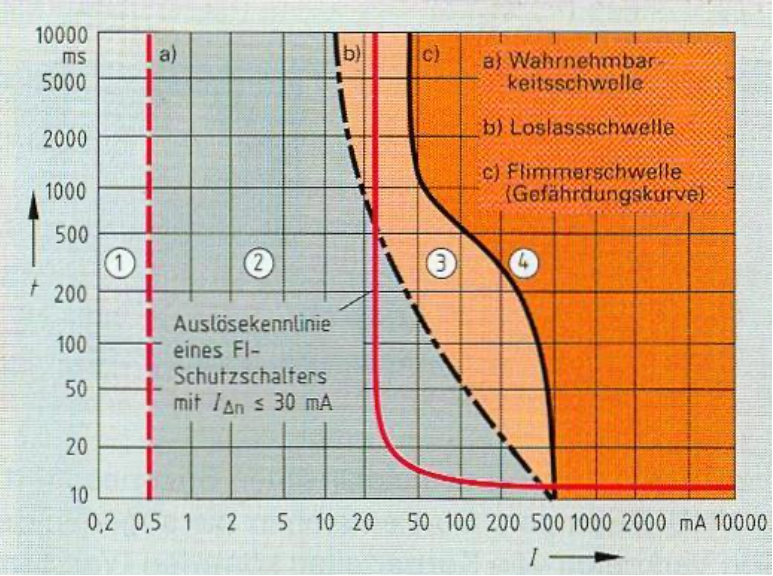

Das x-y-Diagramm "Die Gefahren des elektrischen Stroms" zeigt die Wirkung des elektrischen Stromes auf den menschlichen Körper, im Zusammenhang mit Stromstärke in Milliampere (x-Achse) und Zeit in Millisekunden (y-Achse).In Leserichtung sind 4 Bereiche zu erkennen: Im ersten Bereich ist der Strom noch nicht spürbar, im zweiten Bereich merkt man ihn schon, ab dem dritten Breich verkrampfen die Muskeln so, dass man die Stromquelle nicht mehr loslassen kann, und ab dem 4. Bereich schwebt man in Lebensgefahr.
Die Wahrnehmungsschwelle, also der Übergang von Unmerklich zu Wahrnehmbar befindet sich als vertikle Linie bei 0,5mA.
Die Loslassschwelle bildet eine Linkskurve von 500mA (min. Zeit) bis 50mA bei maximaler Zeit.
Außerdem ist eine weitere Schwelle zu erkennen, diese stellt den Wirkbereich des FI-Schutzschalters dar. Dieser schaltet ab einem gewissen Grad diese Stromquelle ab, wenn diese den gefährlichen Bereich überschreitet.